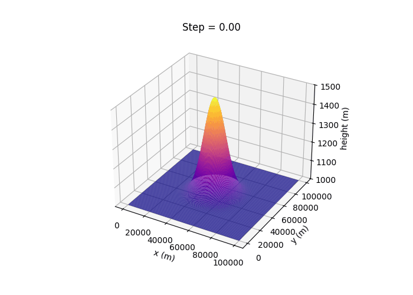

Shallow Water Models · Geostrophic Adjustment · Numerical Experiments

3D visualization of free surface height and adjustment dynamics.
3D visualization of free surface height and adjustment dynamics.
Zonal and meridional velocity evolution during adjustment.